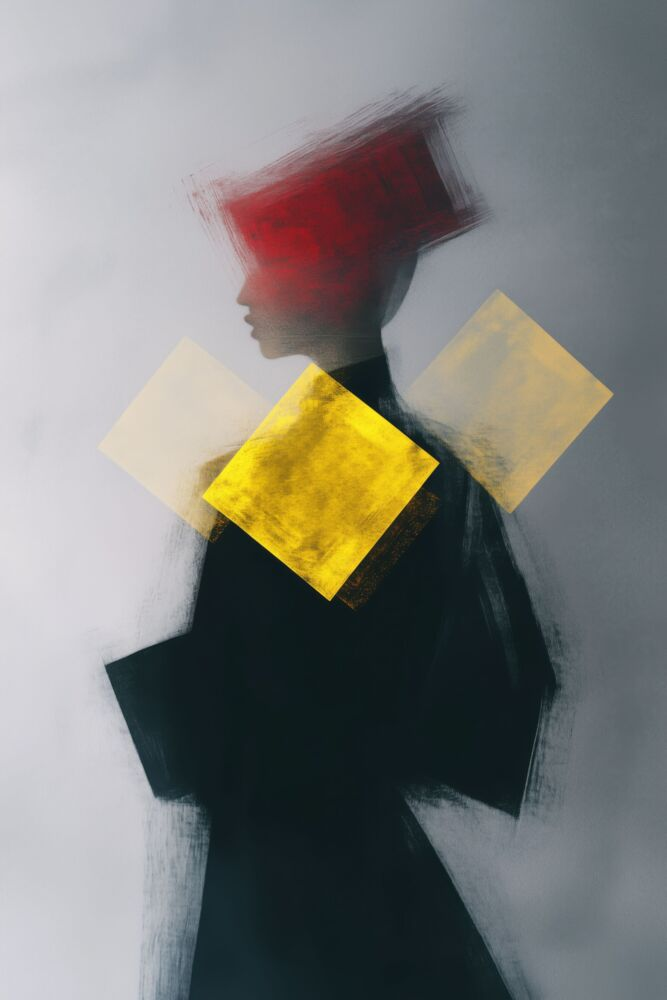

HOBBY
Fotografia, design e piccoli progetti: mi piace osservare bene e trasformare un’idea in qualcosa di concreto.
vai agli hobby ↗01 / PRESENTAZIONE
Sono Alberto. Studio, ascolto musica, gioco e costruisco piccoli esperimenti per il web. Questo è il posto dove raccolgo le cose che mi incuriosiscono.
scopri il mio mondo ↘
02 / PASSIONI
un mix tra testa,
mani e cuffie
Fotografia, design e piccoli progetti: mi piace osservare bene e trasformare un’idea in qualcosa di concreto.
vai agli hobby ↗Una playlist per ogni momento: alt, indie, elettronica, jazz e colonne sonore per cambiare prospettiva.
cosa ascolto ↗03 / ADESSO
imparare facendo
è il mio metodo
“Le idee diventano migliori quando iniziano a funzionare.”
Studio comunicazione digitale e tecnologia. Mi interessa il punto in cui creatività e codice si incontrano: interfacce semplici, progetti utili e cose che abbiano una voce.
04 / CONTATTI
Se vuoi scrivermi, mandarmi una playlist o giocare insieme, mi trovi qui.